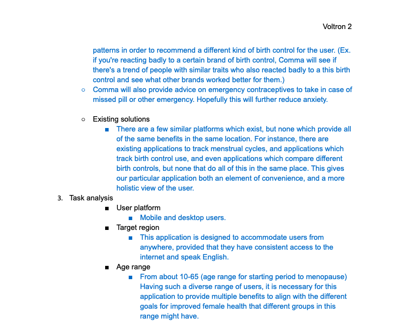
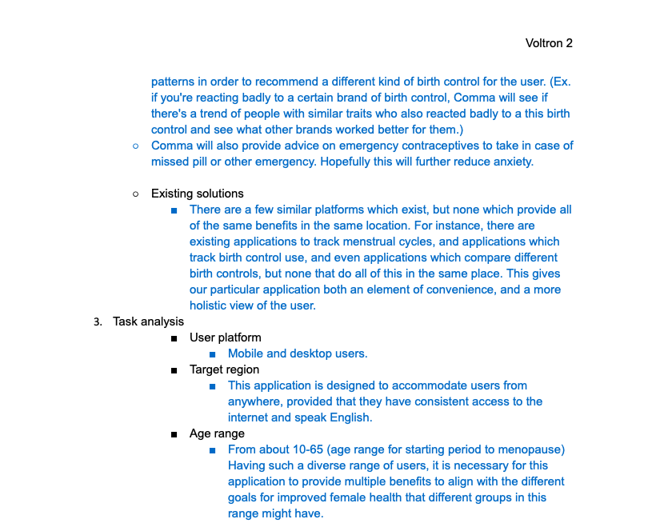

Comma

 

Target Users
Our target users are women with menstrual cycles. This would have an age range of approximately 10 years old
to approximately 65 years old. The app is used to track birth control and mentrual cycles and related elements,
therefore we are not targeting men.
Solution
The solution will create a convenient platform for women to track their cycle, track their menstrual related
symptoms (acne, bloating, cramps, etc.) and receive reminders to take their birth control. The app will also
analyze data about the users (BMI, weight, previous contraception methods used, menstrual related symptoms, etc.)
and find patterns in order to recommend a different kind of birth control for the user. (Ex. if you're reacting
badly to a certain brand of birth control, the app will see if there's a trend of people with similar traits who
also reacted badly to a this birth control and see what other brands worked better for them.)
Users
While users can register and login online, the main users will be mobile users. This will primarily be a mobile
app because the main purpose is to remind women to take their birth control and accessibly track their cycles. If
they have to wait until they are at a desktop, they will most likely not receive the notification in time or
forget to log it.
This application is designed to accommodate users from anywhere, provided that they have consistent access to
the internet and speak English.
From about 10-65 (age range for starting period to menopause) Having such a diverse range of users, it is
necessary for this application to provide multiple benefits to align with the different goals for improved female
health that different groups in this range might have.
In many places, economic standing may pose certain limitations on the accessibility of contraceptives. This
application is designed to benefit those of any economic standing with consistent access to a computer or apple/android
device. A person with access to all contraceptive options may explore the full benefits of the application while a user
who cannot afford a different contraceptive which is optimized for them may not benefit as much, but would still have a
platform for tracking and recording menstrual cycles.
The important characteristics of the task environment are that this application targets a single large-scale group,
and provides a platform to both inform and help with many common problems of this group as part of a long-term solution.
Task Analysis
What are people trying to achieve: The problem is that many women of reproductive age lack the proper methodology,
knowledge, and platform to track their reproductive health.
Why are they trying to achieve it: Many women are uninformed of their contraceptive options, unhappy with their current
contraceptive, or having trouble managing contraceptive use and/or menstrual cycles. One of the many benefits of this
application is that it seeks to accommodate many different problems at ones.
How are they going to achieve it: In tracking reproductive health and birth control use, and by providing a platform by
which the statistics are readily available, users will be provided a more holistic view of their female health, with
additional resources for improvements as are necessary or desired. For instance, a user of this application who uses a
certain brand of contraception may notice that over time, they experience high rates of side effects compared to other
users and low rates of effectiveness due to use. This application would provide a platform through which the user can
both explore other options of contraception which may be a better fit for their lifestyle, or have access to tools
which can improve effectiveness of the current contraceptive.
Similar systems exist, but none that combine birth control/appointment/refill reminders, cycle tracking, and
birth control comparisons/information. A lot of our responses from our survey (see below) was that they wished
that their was one app for everything.
Hierarchical Task Analysis
0: Register
1. Click create account on website
2. Enter information
2.1 Enter email and password
2.2 Enter biological information (age, weight, height)
2.3 Birth Control
2.3.1 Choose name of birth control
2.3.2 Compare different birth controls
2.3.2.1 Enter symptoms
2.4 Choose which reminders you want (possibly none)
2.4.1 Enable notifications
2.4.2 Choose time
3. Confirm
3.1 Click confirm
3.2 Receive email confirmation
4. Download app
4.1 Download app
4.2 Log in
4.3 Enable permissions
Implications
Our survey results indicated that an ideal birth control app would include a feature to manage prescriptions and
doctor’s appointments and a feature to track ovulation/fertility.
It took 61.7% of women surveyed more than one attempt to find the right birth control and almost half are still
unsatisfied with their current method. This gave us the idea to use the data input by users to create a
data/pattern-driven way to predicting the most suitable birth control method.
65.7% of women surveyed said that their primary source for information concerning birth control is their gynecologist.
This indicates that having real gynecologists involved in the making of this app would allow users to feel safer and
more trusting towards provided information.
The range of different methods that surveyors provided for keeping track of their birth control indicates that no
current app has provided sufficient motivation for its use. This tells us that our app needs a different benefit
in order to motivate users.
Link to survey/results:
https://docs.google.com/forms/d/1eXmqVf_rFqgPXWyTzkIYM40PMgY7O2dJKu1BS7vCzR4/edit?usp=sharing